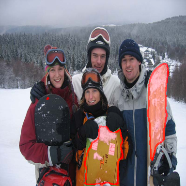
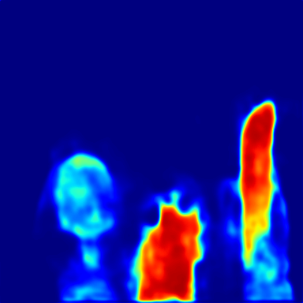
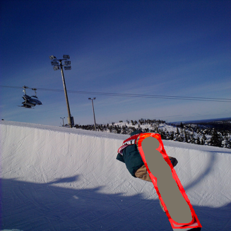
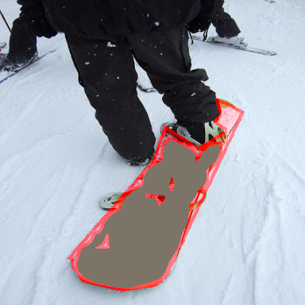

We evaluated our method against state-of-the-art attribution methods. Below are the results on COCO-20i and Pascal-5i datasets using DCAMA and DMTNet models in 1-way 5-shot setting. Refer to the paper for more details and results.
Explainable AI (XAI) has made significant progress in conventional vision tasks, yet interpretability in Few-Shot Learning (FSL)—and specifically Few-Shot Semantic Segmentation (FSS)—remains underexplored. Existing FSS models are primarily evaluated on accuracy, leaving their internal reasoning opaque. This ambiguity makes it difficult to diagnose failures or select optimal support examples.
In this paper, we introduce Affinity Explainer (AffEx), a framework designed to interpret matching-based FSS models. By leveraging the inherent matching mechanisms (similarity scores) of these architectures, AffEx derives contribution maps that highlight which support pixels most strongly influence the query prediction. We propose three variants: Unmasked, Masked, and Signed AffEx.
Furthermore, we extend the causal evaluation metrics Insertion/Deletion Area Under the Curve (IAUC/DAUC) to the FSS domain to rigorously quantify interpretability. Our extensive benchmark on COCO-20i and Pascal-5i demonstrates that AffEx provides actionable insights into model behavior and outperforms standard model-agnostic explanation methods.
Visualizing attributions generated by AffEx compared to other methods (Saliency, Blur IG, XRAI).
Affinity Explainer is a novel interpretability framework tailored for matching-based Few-Shot Semantic Segmentation (FSS) models. Unlike generic explanation methods (e.g., Grad-CAM) that often struggle with the multi-image inputs of few-shot tasks, AffEx directly leverages the model's internal matching mechanism to reveal how prediction decisions are made.
Matching-based models compute dense correlations between Query and Support features. AffEx intercepts these raw similarity scores and transforms them into intuitive attribution maps through a three-step process:
Initialize: Query (Cat) vs Support Set (Black cat, Dog)
We propose three variants to handle different interpretability needs:
To evaluate the faithfulness of our explanations, we extend Insertion AUC (IAUC) and Deletion AUC (DAUC) to FSS.
DAUC measures the drop in model performance (mIoU or Confidence) as we progressively remove the "most important" pixels from the support set. A good explanation method should cause a rapid drop. Conversely, IAUC measures performance gain as we introduce important pixels to an empty support set. We also introduce mIoULoss@p, which quantifies the accuracy loss when using only the top p% of relevant pixels.
Use the slider to observe the effect of perturbing the support set.


Shots 1 - 5


We evaluated our method against state-of-the-art attribution methods. Below are the results on COCO-20i and Pascal-5i datasets using DCAMA and DMTNet models in 1-way 5-shot setting. Refer to the paper for more details and results.
| Method | IAUC (mIoU) |
DAUC (mIoU) |
Diff. ↑ |
IAUC @1% (Conf) |
mIoUL @1% ↓ |
mIoUL @5% ↓ |
|---|---|---|---|---|---|---|
| DCAMA | ||||||
| Random | 47.50 | 46.85 | 0.65 | 43.36 | 41.42 | 31.62 |
| Gaussian Noise Mask | 52.32 | 15.46 | 36.86 | 53.80 | 31.08 | 17.71 |
| Saliency | 52.02 | 41.10 | 10.92 | 44.97 | 37.01 | 23.73 |
| Integrated Grad. | 49.23 | 45.97 | 3.27 | 45.63 | 34.18 | 22.25 |
| Guided IG | 50.77 | 45.10 | 5.67 | 51.25 | 30.17 | 21.65 |
| Blur IG | 52.40 | 41.63 | 10.78 | 44.25 | 36.69 | 22.84 |
| XRAI | 54.45 | 38.72 | 15.73 | 51.98 | 26.59 | 12.08 |
| Deep Lift | 49.78 | 48.51 | 1.27 | 44.80 | 36.67 | 24.07 |
| LIME | 53.18 | 48.44 | 4.73 | 47.98 | 32.44 | 15.29 |
| Unmasked AffEx | 54.85 | 28.26 | 26.59 | 60.82 | 17.41 | 8.85 |
| Masked AffEx | 52.32 | 15.06 | 37.26 | 62.60 | 16.43 | 12.27 |
| Signed AffEx | 53.24 | 23.77 | 29.48 | 60.49 | 19.40 | 13.67 |
| DMTNet | ||||||
| Random | 21.21 | 20.98 | 0.23 | 60.36 | 24.93 | 31.88 |
| Gaussian Noise Mask | 39.08 | 15.71 | 23.37 | 59.35 | 20.69 | 13.26 |
| Saliency | 36.51 | 26.79 | 9.72 | 63.09 | 21.05 | 15.77 |
| Integrated Grad. | 26.25 | 19.47 | 6.78 | 62.51 | 21.63 | 20.32 |
| Blur IG | 35.04 | 20.32 | 14.72 | 62.17 | 21.54 | 20.20 |
| XRAI | 38.19 | 26.55 | 11.64 | 68.42 | 16.48 | 10.73 |
| LIME | 36.83 | 32.44 | 4.39 | 70.72 | 19.20 | 11.36 |
| Unmasked AffEx | 40.10 | 17.09 | 23.01 | 67.30 | 10.53 | 4.49 |
| Masked AffEx | 40.52 | 16.38 | 24.14 | 67.23 | 9.95 | 3.10 |
| Signed AffEx | 38.85 | 18.81 | 20.03 | 67.16 | 10.49 | 3.72 |
@misc{marinisMatchingBasedFewShotSemantic2025,
title = {Matching-{Based} {Few}-{Shot} {Semantic} {Segmentation} {Models} {Are} {Interpretable} by {Design}},
url = {http://arxiv.org/abs/2511.18163},
doi = {10.48550/arXiv.2511.18163},
publisher = {arXiv},
author = {Marinis, Pasquale De and Kaymak, Uzay and Brussee, Rogier and Vessio, Gennaro and Castellano, Giovanna},
year = {2025},
}